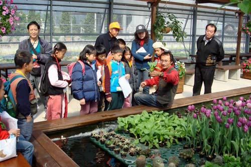
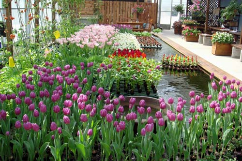

水水世界由「水水老師」黃世銘推動， 專注於生態水培系統的研究與推廣， 至今已逾十年。合作案件遍及都市綠化、綠建築國際合作、 國科會產學合作畜牧肥水再利用、溫室環控半鹹水魚菜共生等， 跨領域整合是我們的核心能力。
2014年2月，來自教育、建設、園藝、水耕、景觀、 溫室環控、水產、資訊、工業設計等領域的專家 齊聚埔里水水世界，共同面對台灣的人口老化、環境污染、 糧食危機與健康醫療等課題。我們相信， 在都市叢林的樹冠層裡，透過魚菜共生的成功經驗， 能為下一代找到永續的答案。
水水團隊傳達的不只是技術，更是對環境與土地的愛， 以及對生命的關懷。
水水世界不僅是一項技術，更是一種生活態度。 我們相信，家有魚菜，永續的信念就能在家庭裡滋長， 並散播得更遠。在都市叢林的多層次樹冠層裡， 有陽光、有水、有蔬菜、有果樹、有魚、有兔子、有搖搖椅、 有爺爺奶奶、有孩子。那裡沒有「專家」頭銜， 只有敞開的心與分享的喜悅。 水水團隊願將這份喜悅傳遞出去， 讓更多人共享對環境與土地的愛。
水水團隊來自各領域，我們只有一個共同信念： 讓環境更好，讓孩子的未來更有希望。 透過生態水培與人工浮島，我們在都市與鄉村之間， 找回人與自然和諧共處的平衡點。